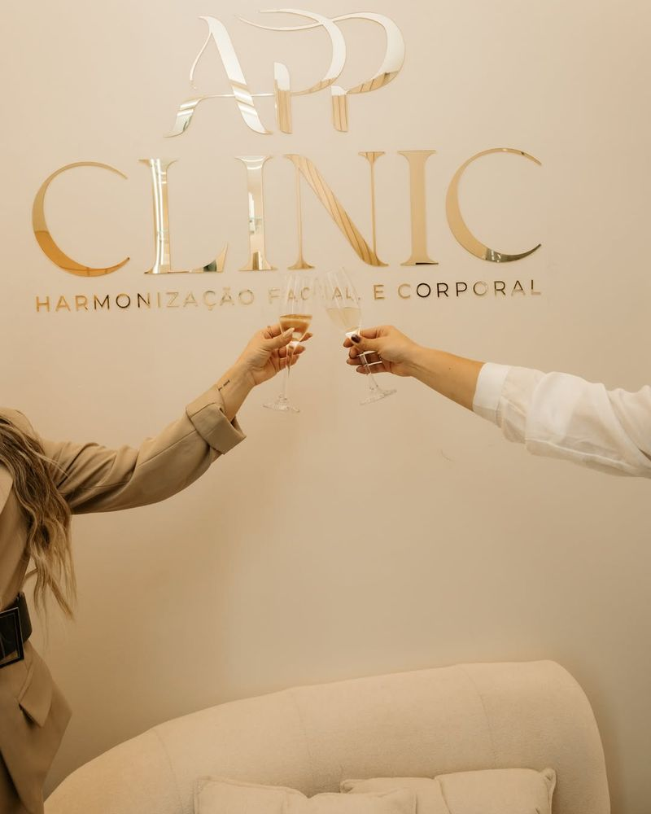

APP Clinic
Ana Paula Pinheiro · Estética Avançada
Procedimentos para rosto, corpo e pele em duas unidades na zona sul de São Paulo. Tudo começa com uma avaliação individual, para entender o que você deseja e o que faz sentido para você.
InterlagosAPP Clinic
Jardim Casa GrandeClínica Ana Paula Pinheiro

Antes de qualquer procedimento, uma conversa: entender o que você deseja e explicar o que cada tratamento pode e não pode fazer.

Procedimentos por área
Rosto, corpo, pele e laser. A indicação, o número de sessões e o intervalo entre elas são definidos na avaliação, para cada pessoa.
Rosto
- Toxina botulínica
- Preenchimento com ácido hialurônico
- Bioestimulador de colágeno
- Harmonização facial
Corpo
- Criolipólise
- Ultraformer MPT
- Harmonização corporal e glútea
- Protocolos para celulite e flacidez
Pele e laser
- Laser Lavieen
- Limpeza de pele
- Depilação a laser
- Terapia capilar
Ana Paula Pinheiro
À frente das duas unidades
Ana Paula fundou a Clínica de Estética Ana Paula Pinheiro, no Jardim Casa Grande, e em 2026 abriu a segunda unidade, a APP Clinic, em Interlagos. Acompanha de perto o planejamento de cada atendimento.
Estudo e atualização
Participa de imersões e eventos do setor para conhecer tecnologias e técnicas, como a imersão sobre laser de CO₂ promovida pela Fismatek em 2026.
A APP Clinic por dentro



Antes e depois, só com autorização
Os resultados mostrados neste site serão sempre de pacientes reais que autorizaram o uso das imagens aqui, com fotos comparáveis e as informações necessárias para entender cada caso. Os casos estão em revisão e serão publicados quando estiverem completos.
Cada caso informa
- O procedimento realizado
- A região tratada
- O intervalo entre as fotos
- O número de sessões
- O contexto necessário para entender o resultado
O primeiro atendimento
Do primeiro contato ao início de um tratamento, cada etapa tem um propósito. Você decide se e quando seguir.
Mensagem
Você escolhe a unidade e conta pelo WhatsApp o que gostaria de cuidar. A equipe responde com os horários disponíveis para a avaliação.
Avaliação
Uma conversa presencial com a profissional: seus objetivos, seu histórico de saúde e de procedimentos, e o que é possível no seu caso.
Plano
Quando houver indicação, você recebe a proposta de tratamento, com etapas e valores, e decide com calma.
Atendimento
As sessões são agendadas conforme o plano combinado, com orientações de cuidado antes e depois de cada uma.
Dúvidas frequentes
Outras perguntas sobre avaliação, preparo e atendimento estão na página de dúvidas.
Como funciona a avaliação?
É um encontro presencial com a profissional para entender o que você deseja, conhecer seu histórico e explicar quais procedimentos podem ou não ser indicados no seu caso. Você sai sabendo as possibilidades e decide com calma.
Mandar mensagem já garante um horário?
Não. A mensagem é um pedido de avaliação. A equipe responde com as datas disponíveis, e o horário fica confirmado quando vocês combinarem data e hora.
Qual unidade devo escolher?
A que for mais prática para você. A APP Clinic fica em Interlagos e a Clínica Ana Paula Pinheiro, no Jardim Casa Grande. Se procura um procedimento específico, pergunte pelo WhatsApp em qual unidade ele é realizado.
Preciso me preparar para a avaliação?
Não é preciso preparo especial. Ajuda levar a lista de medicamentos que você usa e lembrar de procedimentos estéticos que já fez, com as datas aproximadas.
Os valores são informados pelo site?
Não. Os valores dependem do plano definido na avaliação e são informados pela equipe.